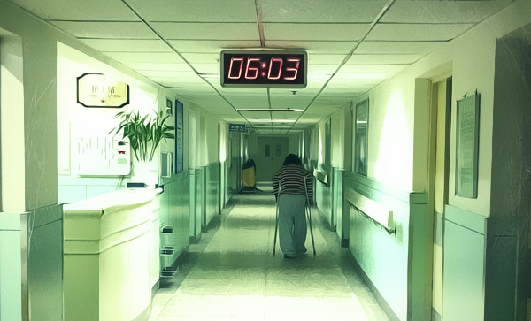

这个元旦假期在医院度过。原本以为北京的医院都是人满为患，没想到这家还有空床位供我们病人家属晚上休息。 医院是个很封闭的空间，在这里你好像与世隔绝，没有电视，没有网络，看楼对面地铁站进进出出的人群，平时自己就是其中一个，这会看来也好像是两个世界的人。
这几天过得很简单，白天在医院陪妈妈，下午回家做饭，吃完再给爸妈带饭过去，晚上跟爸轮流守夜，就睡在旁边那张床单上还有点血迹的空病床上。2013这个元旦，也好像变得跟我们无关。 那天在手术室门口等妈妈出来。这还是我第一次坐在手术室门口。无数次在电视剧里看到的场景，到了现实中不过是一扇简陋的推门，左右两边各写着手术室三个不怎么讲究的字，我在想大概那几个字也有几十年历史了吧。手术室专用电梯出来只有十几平米小小的等候区，没有来去匆匆的大夫，没有哭泣的亲属，有的只是安静。偶尔电梯开门和手术室开门的声音都显得特别响。一个下巴尖尖鼻子大大的老头推着一辆硕大的密封铁皮推车从电梯出来，里面足以装下5，6个人，推车上写着“手术室专用消毒用品车”，斜着头看了我们一眼，前后左右挪好推车的位置，进了手术室。要在电影里，这车里一定装着偷偷潜入手术室的什么人，而这个老头，一定是被私下收买的内应。
等候区仅有的五张椅子坐满了，除了我们一家还有一对三十多岁的夫妻。他们一直沉默不语，电梯门在他们左手边开开关关，每一次上行的电梯开门，他们都望向那边，像是等待着什么。后来终于上来一个医生，好像是另外一间大医院的，给那对夫妻带来了专门订做的手术器材，听医生一边把X光片举向窗边，一边跟他们说明手术方案，才知道要动手术的是那对夫妻的9岁小女儿，右腿手术，要用什么烧掉外层的组织，在小腿骨骼处上钢板，然后用40多个钢钉固定。介绍方案的过程中，那对夫妻一直默默的点头，末了医生说这套订做的器材全部算下来9500，让他们现在把钱给他，夫妻俩 轻轻应了一声，又默默拿出早已准备好的一大摞钱。医生接过钱说“那就这样，你们别着急，我这就去给大夫了”，然后推门进了手术室，夫妻俩愣了一下，对望一眼，跟着医生进了手术室，门还在来回晃着，就在门后，夫妻俩拉住医生，医生说“哎哟，不用给我了，你们都已经给了器材费了”，丈夫把一叠钱塞到医生手上，背着推开手术室的门，一边往外退着，一边说“您就收下吧，不然我们心里不安”。夫妻俩默默坐回我们旁边的座位上，然后再也没说一句话。
对那些还在庆祝末日后新年的人来说，2013元旦很快就会成为和往年一样普通的一个新年，但对这9岁小女孩的一家而言，这个元旦他们大概一生都不会忘记。
